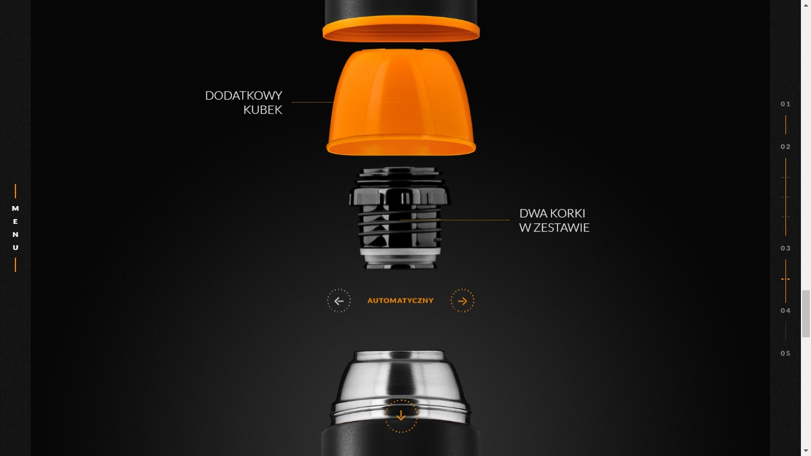
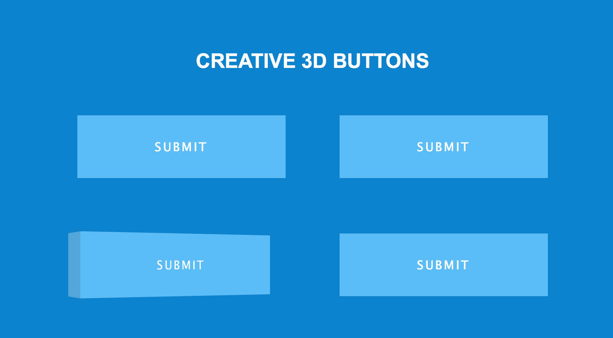

CSS3, uma poderosa ferramenta para estilização de páginas
CSS3, uma poderosa ferramenta para estilização de páginas
CSS3 é a segunda mais nova versão das famosas Cascading Style Sheets (ou simplesmente CSS), onde se define estilos para páginas web com efeitos de transição, imagem, e outros, que dão um estilo novo às páginas Web 2.0 em todos os aspectos de design do layout.
A principal função do CSS3 é abolir as imagens de plano de fundo, bordas arredondadas, apresentar transições e efeitos para criar animações de vários tipos, como um simples relógio de ponteiros.
Isso se deve aos novos browsers que estão chegando, com suporte à essa linguagem, como o Google Chrome, Opera, Internet Explorer 9, Safari e Mozilla Firefox. Assim, o CSS3 facilitará o trabalho dos que trabalham com web e também dos usuários, pela variedade de transformações na apresentação de um website.
O CSS3 é extremamente capaz de construir animações que impressionam o mais avançado desenvolvedor web, tanto em 2 como em 3 dimensões. Os mais comuns são os efeitos de rotação, movimento e transição.
Existem, na web, empresas fazendo propaganda utilizando a criatividade e o poder dessa nova era de estilos.
